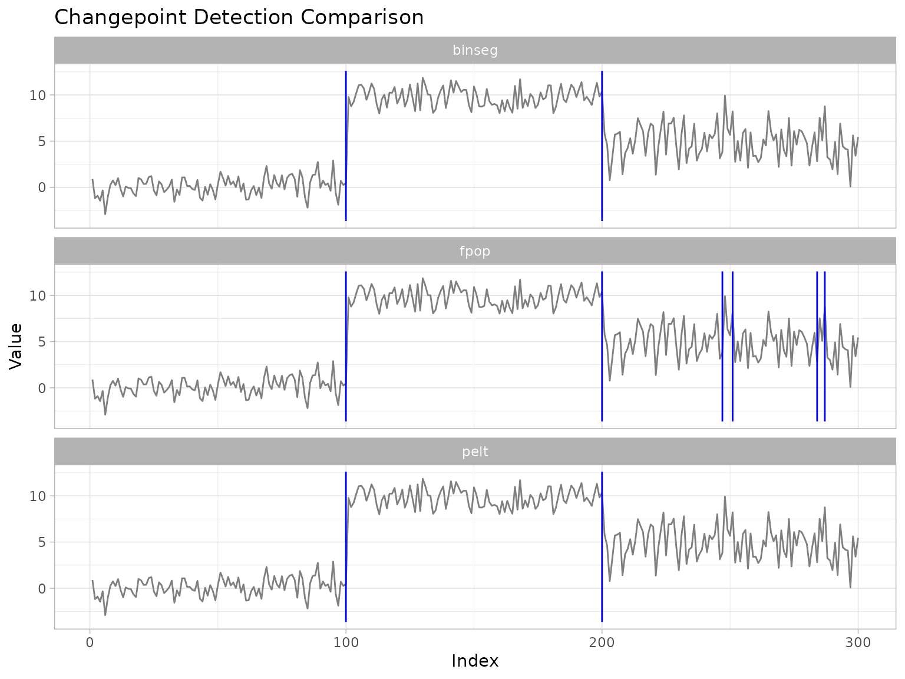
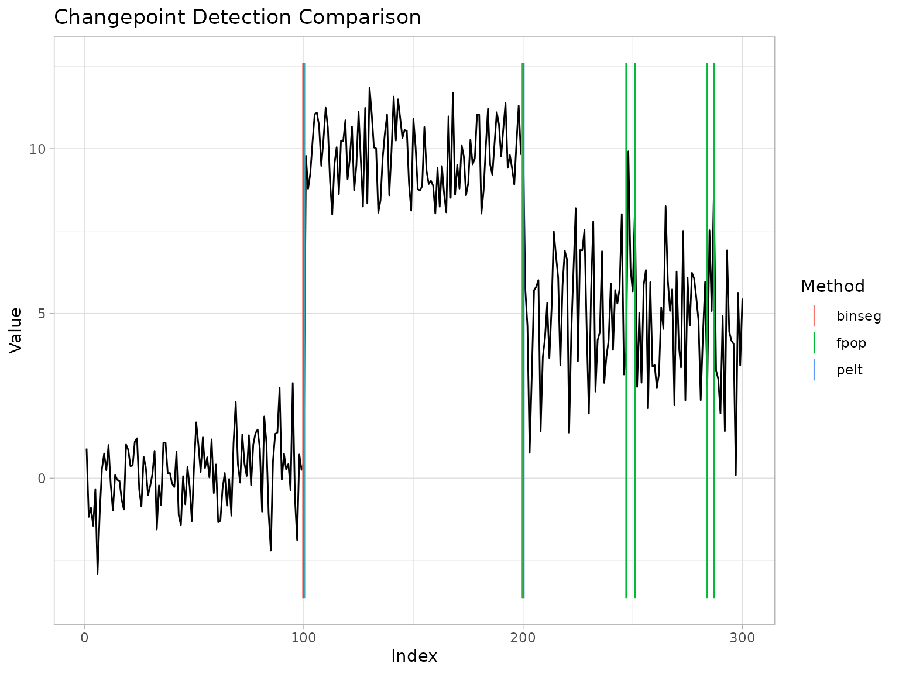
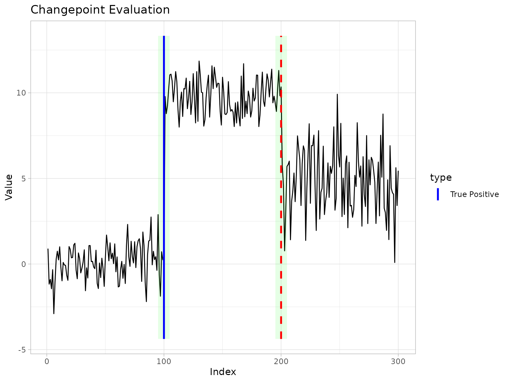

Introduction
The companion vignette
vignette("introduction", package = "ggchangepoint")
provides a comprehensive overview of ggchangepoint’s design, API, and
supported methods. This vignette focuses on method
comparison—the problem of running multiple detectors on the
same data, comparing their outputs, and measuring their accuracy when
ground truth is known.
Problem setup
Let be an ordered sequence. A segmentation with changepoints is an ordered set with , partitioning the data into contiguous segments. Within each segment the data are governed by a parameter (e.g. mean, variance, or distribution) that changes at each (Truong et al. 2020).
Most offline methods minimise a penalised cost
where is a segment cost (typically maximised log-likelihood) and guards against over-segmentation (Yao 1988). The choice of penalty is the central challenge of the field.
Taxonomy of methods in v0.2.0
The methods available through cpt_detect() in this
release fall into three broad families:
| Family | Methods | Approach |
|---|---|---|
| Exact / pruned optimal partitioning | PELT, BinSeg, SegNeigh, AMOC, FPOP | Dynamic programming with pruning (Killick et al. 2012; Maidstone et al. 2017) |
| Randomised and multiscale search | WBS, WBS2, NOT, MOSUM, IDetect, TGUH | Random intervals or moving windows (Fryzlewicz 2014, 2020, 2022; Baranowski et al. 2019; Eichinger and Kirch 2018; Anastasiou and Fryzlewicz 2022) |
| Nonparametric / distribution-free | NP (changepoint.np), ECP (ecp) | Empirical distribution or energy distance (Haynes et al. 2017; James and Matteson 2014) |
The ggcpt_compare() function runs multiple methods on
the same series and arranges the results. It respects the
future::plan() for optional parallel execution when many
methods are compared.
Comparing methods on a simulated series
Generate a three-regime series with changes in mean and variance:
The faceted layout shows each method in its own panel, with x-axes aligned:
ggcpt_compare(x, methods = cmp_methods, layout = "facet")
The overlay layout draws all changepoints on a single panel, colour-coded:
ggcpt_compare(x, methods = cmp_methods, layout = "overlay")
For a numeric summary, ggcpt_compare_table() returns a
tidy tibble:
ggcpt_compare_table(x, methods = cmp_methods)
#> # A tibble: 10 × 3
#> method cp cp_value
#> <chr> <dbl> <dbl>
#> 1 pelt 100 0.467
#> 2 pelt 200 10.3
#> 3 binseg 100 0.467
#> 4 binseg 200 10.3
#> 5 fpop 100 0.467
#> 6 fpop 200 10.3
#> 7 fpop 247 3.83
#> 8 fpop 251 8.22
#> 9 fpop 284 2.81
#> 10 fpop 287 8.76Accuracy metrics
When true changepoint locations are known, cpt_metrics()
provides a standard suite of accuracy measures (Truong et al. 2020; van den Burg
and Williams 2020):
truth <- c(100, 200)
# PELT
res_pelt <- cpt_detect(x, method = "pelt", change_in = "meanvar")
generics::tidy(res_pelt)$cp
#> [1] 100 200
# Metrics for BinSeg
res_binseg <- cpt_detect(x, method = "binseg", change_in = "meanvar")
cpt_metrics(generics::tidy(res_binseg)$cp, truth, n = length(x))
#> # A tibble: 1 × 12
#> n n_pred n_truth precision recall f1 covering hausdorff rand_index
#> <int> <int> <int> <dbl> <dbl> <dbl> <dbl> <dbl> <dbl>
#> 1 300 2 2 1 1 1 1 0 1
#> # ℹ 3 more variables: annotation_error <int>, mae_matched <dbl>,
#> # rmse_matched <dbl>Visual evaluation
ggcpt_eval() overlays predictions and ground truth,
colouring true positives, false positives, and misses within a tolerance
margin:
ggcpt_eval(pred = c(100), truth = c(100, 200), data_vec = x)
Evaluation study on canonical signals
We now conduct a systematic comparison across the five built-in test signals (Donoho and Johnstone 1994), using a tolerance margin of 5 observations.
set.seed(42)
signals <- list(
blocks = signal_blocks(512),
fms = signal_fms(512),
mix = signal_mix(512),
teeth = signal_teeth(512),
stairs = signal_stairs(512)
)
methods <- c("pelt", "binseg", "fpop", "wbs", "not")
margin <- 5
results <- do.call(rbind, lapply(names(signals), function(nm) {
sig <- signals[[nm]]
truth <- attr(sig, "true_changepoints")
do.call(rbind, lapply(methods, function(m) {
res <- tryCatch(
cpt_detect(sig$value, method = m, change_in = "mean"),
error = function(e) NULL
)
if (is.null(res)) return(NULL)
pred <- generics::tidy(res)$cp
met <- cpt_metrics(pred, truth, n = length(sig$value), margin = margin)
data.frame(signal = nm, method = m, met)
}))
}))
#> Warning in BINSEG(sumstat, pen = pen.value, cost_func = costfunc, minseglen =
#> minseglen, : The number of changepoints identified is Q, it is advised to
#> increase Q to make sure changepoints have not been missed.
results[, c("signal", "method", "precision", "recall", "f1", "covering",
"hausdorff")]
#> signal method precision recall f1 covering hausdorff
#> 1 blocks pelt 1.0000000 0.09090909 0.1666667 0.2378708 363
#> 2 blocks binseg 1.0000000 0.09090909 0.1666667 0.2378708 363
#> 3 blocks fpop 1.0000000 0.09090909 0.1666667 0.2378708 363
#> 4 blocks wbs 1.0000000 0.09090909 0.1666667 0.2378708 363
#> 5 blocks not 1.0000000 0.09090909 0.1666667 0.2378708 363
#> 6 fms pelt 1.0000000 0.28571429 0.4444444 0.3773701 179
#> 7 fms binseg 0.7500000 0.42857143 0.5454545 0.6386754 172
#> 8 fms fpop 1.0000000 0.85714286 0.9230769 0.8626271 51
#> 9 fms wbs 1.0000000 1.00000000 1.0000000 0.9519373 5
#> 10 fms not 1.0000000 1.00000000 1.0000000 0.9632035 4
#> 11 mix pelt 0.0000000 0.00000000 0.0000000 0.4667797 55
#> 12 mix binseg 0.0000000 0.00000000 0.0000000 0.3929160 59
#> 13 mix fpop 0.0000000 0.00000000 0.0000000 0.4667797 55
#> 14 mix wbs 0.1111111 0.20000000 0.1428571 0.5560015 77
#> 15 mix not 0.1000000 0.20000000 0.1333333 0.5355308 77
#> 16 teeth pelt 1.0000000 1.00000000 1.0000000 1.0000000 0
#> 17 teeth binseg 1.0000000 1.00000000 1.0000000 0.9961131 1
#> 18 teeth fpop 1.0000000 1.00000000 1.0000000 1.0000000 0
#> 19 teeth wbs 1.0000000 1.00000000 1.0000000 1.0000000 0
#> 20 teeth not 1.0000000 1.00000000 1.0000000 1.0000000 0
#> 21 stairs pelt 1.0000000 1.00000000 1.0000000 1.0000000 0
#> 22 stairs binseg 1.0000000 0.55555556 0.7142857 0.5991635 51
#> 23 stairs fpop 1.0000000 1.00000000 1.0000000 1.0000000 0
#> 24 stairs wbs 1.0000000 1.00000000 1.0000000 0.9961313 1
#> 25 stairs not 1.0000000 1.00000000 1.0000000 1.0000000 0The table shows how different methods perform across signal types. PELT and FPOP, as exact methods, generally have strong performance, while WBS and NOT can detect small or short features that the exact methods miss at the default penalty setting—but may also over-segment.
Interpreting the metrics
- Precision / Recall / F1: standard classification measures with a margin of tolerance.
- Covering: the average Jaccard overlap between true and predicted segments (van den Burg and Williams 2020).
- Hausdorff distance: worst-case localisation error between predicted and true changepoint sets.
Full workflow: simulate, detect, evaluate
A complete reproducible workflow combining the simulator, detection, and evaluation:
set.seed(1)
dat <- cpt_simulate(200, changepoints = c(60, 120),
change_in = "mean", params = c(0, 8, 3), sd = 1)
truth <- attr(dat, "true_changepoints")
res <- cpt_detect(dat$value, method = "pelt", change_in = "mean")
pred <- generics::tidy(res)$cp
cpt_metrics(pred, truth, n = length(dat$value))
#> # A tibble: 1 × 12
#> n n_pred n_truth precision recall f1 covering hausdorff rand_index
#> <int> <int> <int> <dbl> <dbl> <dbl> <dbl> <dbl> <dbl>
#> 1 200 2 2 1 1 1 1 0 1
#> # ℹ 3 more variables: annotation_error <int>, mae_matched <dbl>,
#> # rmse_matched <dbl>Multi-annotator evaluation
When multiple ground-truth annotations are available—as in the Turing
Change Point Dataset (van
den Burg and Williams 2020)—use
cpt_metrics_annotated() to average metrics across
annotators:
cpt_metrics_annotated(pred = c(100, 200),
annotations = list(c(100, 200), c(105, 198)),
n = 300)
#> # A tibble: 1 × 7
#> n n_annotators n_pred precision recall f1 covering
#> <dbl> <int> <int> <dbl> <dbl> <dbl> <dbl>
#> 1 300 2 2 1 1 1 0.977Parallel comparison (optional)
If the future and future.apply packages are
installed, ggcpt_compare() and the evaluation loop can run
methods in parallel by setting a future::plan():
future::plan(future::multisession, workers = 2)
ggcpt_compare(x, methods = c("pelt", "binseg", "wbs", "fpop", "not"),
seed = 1)Parallel execution is reproducible: when a seed is
supplied, the detectors are fanned out over parallel-safe L’Ecuyer-CMRG
random streams, so the result is identical regardless of worker count or
backend.
See also
-
vignette("introduction", package = "ggchangepoint")for a comprehensive walkthrough of the package API and supported methods. - The R package references for the individual detection engines: changepoint (Killick and Eckley 2014), wbs (Fryzlewicz 2014), not (Baranowski et al. 2019), mosum (Eichinger and Kirch 2018), fpop (Maidstone et al. 2017), IDetect (Anastasiou and Fryzlewicz 2022), breakfast (Fryzlewicz 2020, 2022), changepoint.np (Haynes et al. 2017), and ecp (James and Matteson 2014).